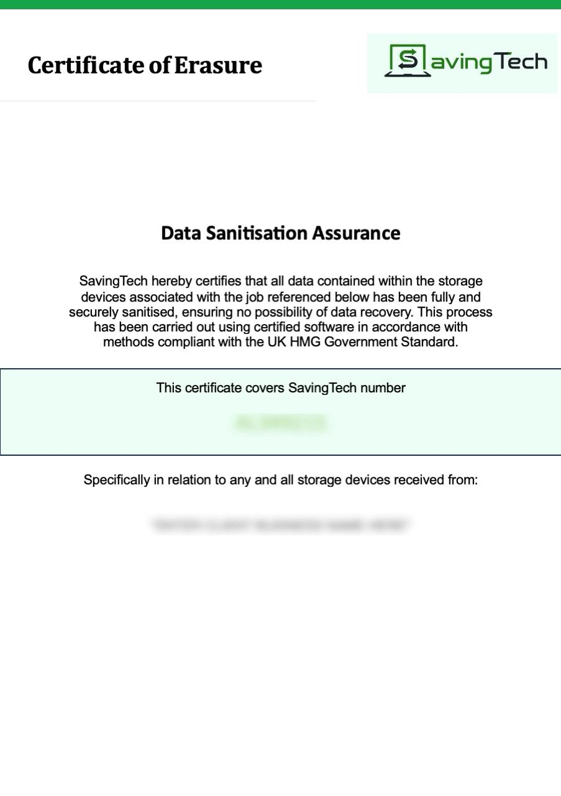

Certificates of destruction & compliance documentation
Every collection we carry out comes with a complete set of compliance documentation as standard. This is not optional paperwork – it is the audit trail that protects your business.
BOOK A FREE COLLECTIONFree collections when you recycle at least 10 laptops, PCs & servers (any combination). It's also free to recycle almost all waste IT with us.
What documentation do you receive after collection?
Waste Transfer Note (WTN)
A legally required document under the Environmental Protection Act 1990. It confirms that your waste has been transferred to a licensed carrier and records the type, quantity, and destination of the material collected. You are required to retain this for a minimum of two years.
Certificate of Recycling
Confirms that the equipment collected has been processed in accordance with the WEEE Regulations. This is the document you need to demonstrate compliance if your organisation is subject to audit or due diligence by clients or regulators.
Standard Data Destruction Certificate
Confirms that data has been destroyed to an NCSC-approved standard. This is the evidence you need to demonstrate GDPR compliance in relation to data-bearing hardware.
For organisations that require enhanced accountability, we offer individual asset-level Enhanced Data Destruction Certificates with full asset tracking. This is available for an additional fee and is particularly relevant for clients in healthcare, finance, and legal services. Please request this at the point of booking.
Carbon Offset Certificate
Issued with every collection, documenting the verified carbon offset associated with your recycling activity. This can be included in your CSR or ESG reporting as evidence of measurable environmental benefit.
How long should you keep your recycling certificates?
We recommend retaining all compliance documentation for a minimum of three years. Waste Transfer Notes carry a two-year statutory retention requirement. Certificates of Data Destruction should be retained for as long as the devices they cover would otherwise have been in service.
Examples of our certificates
Data destruction certificates
We offer standard certificates by default. You have the option of upgrading to an enhanced data destruction service for £5+VAT per disk/drive which provides a fully audited log

Standard Data Destruction Certificate

Enhanced Data Destruction Certificate
WEEE recycling certificates
When we collect assets from your business, we issue you with a Duty of Care Certificate (Waste Transfer Note) also known as a WTN. As we track the carbon across the entire process from collecting to processing and recycling your assets we also issue a Certificate of Carbon Offset — to evidence to you that we have offset DOUBLE the carbon involved.
Duty of Care Certificate (Waste transfer note)
Certificate of carbon offset
Learn more
Read our article on Understanding data destruction certificates to get more detail on these certificates and why they are important. You can also contact us to ask a question about them — we are here to make recycling your IT waste compliant and hassle-free.
Here's why businesses recycle their IT with us
Secure, carbon-negative IT recycling with free qualifying collections, data destruction and certificates always provided.
Free qualifying collections
Free collection for 10+ qualifying laptops, PCs or servers.
Certificates provided
You receive the documentation you need for your records.
Secure data destruction
Data-bearing devices are securely erased, degaussed or destroyed where required.
Carbon-negative recycling
Reuse-first processing, UK-based handling and twice the CO&sub2; offset.